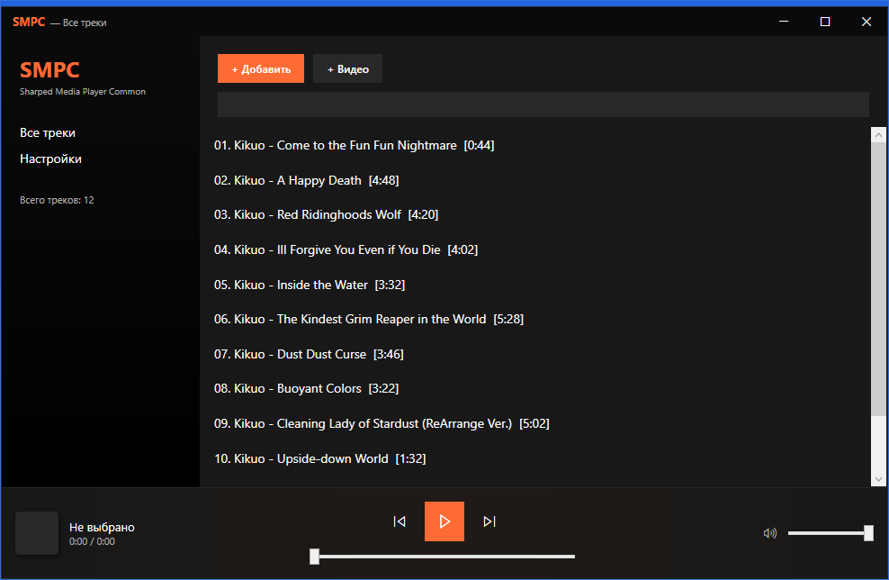
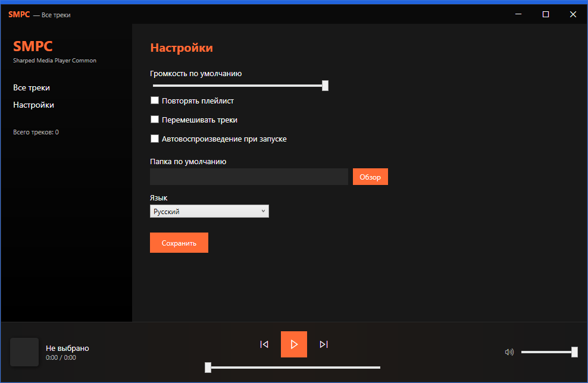
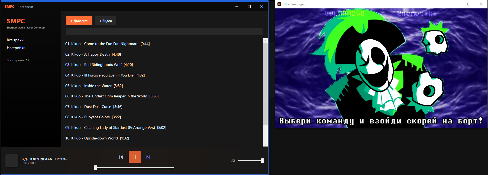

SMPC
Sharped Media Player Common
Sharped Media Player Common
Музыка и видео в одном приложении. Тёмная тема, три языка, поддержка обложек и тегов. Написан на C# с использованием WPF, NAudio и LibVLCSharp.
Всё, что нужно для прослушивания музыки и просмотра видео.
MP3, WAV, M4A, AIFF, FLAC. Воспроизведение через NAudio с плавной перемоткой и регулировкой громкости.
MP4, MKV, AVI, MOV, WEBM. Отдельное окно видео, которое всегда рядом с плеером.
Чтение обложек и метаданных из файлов через TagLib#. Название, исполнитель, альбом, год.
Сохранение списка треков между запусками, поиск, сортировка, перемещение вверх и вниз.
Русский, английский и украинский интерфейс. Переключение прямо в настройках.
Стильный тёмный интерфейс с оранжевым акцентом в духе современных стриминговых сервисов.
Как выглядит плеер.



Проект построен на стеке .NET и открытых библиотеках.
Приложение распространяется как AppX-пакет для Windows 10 и 11.
Перед установкой установите сертификат в «Доверенные корневые центры сертификации».